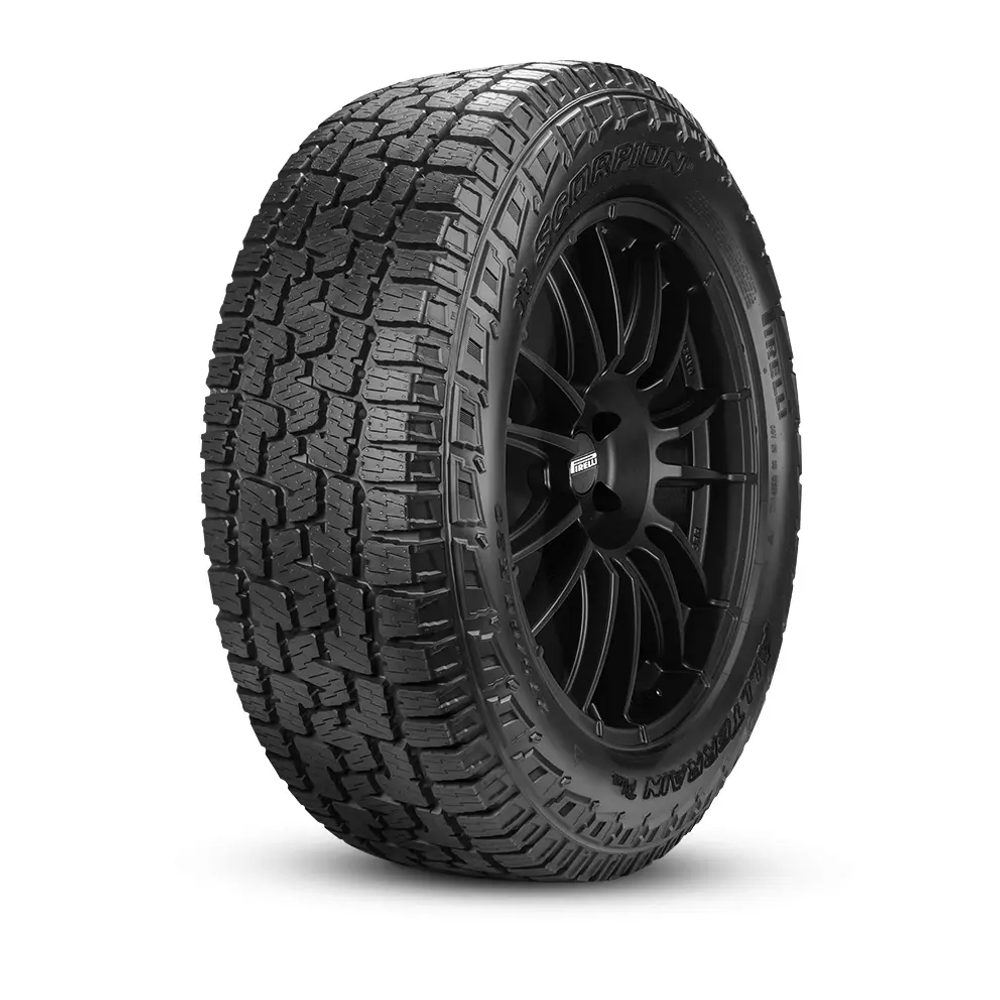

BARBIE MERMAID
Scorpion AT Plus Brooklyn, Malibu e as irmãs Skipper, Stacie e Chelsea embarcam em uma aventura submarina enquanto se transformam em sereias.
LAGO DOS CISNES

Inspirado no balé O Lago dos Cisnes, de Piotr Ilitch Tchaikovski, o longa segue Odette (Barbie), uma moça humilde que é amaldiçoada por um feiticeiro, Rothbart, e transformada em um cisne.
BARBIE E O QUEBRA NOZES

Clara ganha um lindo soldadinho de madeira de sua tia favorita.
Na mesma noite, o soldado ganha vida para protege-la do Rato Rei, que invade sua sala. Ela acorda e ajuda o Quebra-Nozes, mas o Rato Rei a encolhe com uma terrível magia.